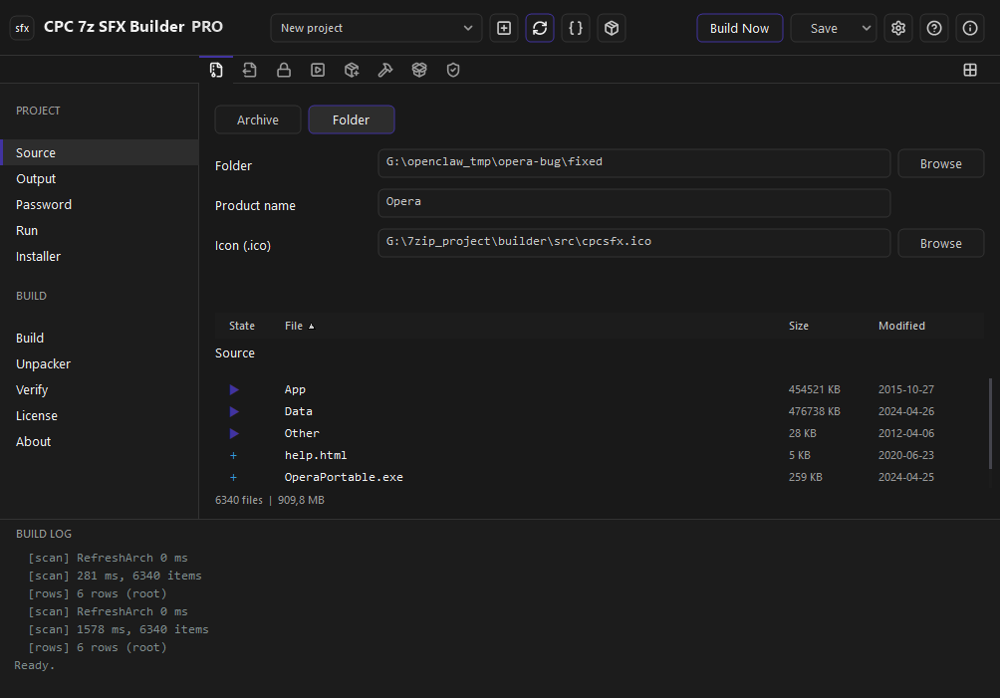

The window at a glance
The application features a unified single-window interface. The layout is divided into three main sections: the top bar for profile management, the central area for configuration, and the bottom panel for activity logging. This design eliminates nested menus and provides direct access to all workflow stages.
Top Bar: Profile Management and Quick Actions
The top bar displays the application name and current license tier (PRO or FREE). The profile drop-down menu indicates the active profile and allows navigation between saved projects. When no profile has been saved yet, it shows New project, and saving opens the Save as dialog. To its right are the quick-action icons: New profile (plus icon), New project (↺ icon, Ctrl+R), browse JSON profile (JSON icon), Save, and the arrow next to Save for Save as.... Next to them are the Installer mode toggle and the Build Now button. After confirming New project, the program switches to the Source tab and places the cursor in the source field, because that is where the work starts. The far-right side has Settings, About, and Help (F1).
Tabs and Navigation
| Area | Function |
|---|---|
| Top bar | Edition badge, profile menu, quick actions, Installer toggle, Build Now button, and the Settings, About, and Help icons. |
| Tab strip | Switches between the eight configuration pages; the view toggle changes icon and text labels. |
| Left navigation | The same pages grouped as PROJECT and BUILD, plus License and About. |
| Content area | Configuration fields belonging to the selected page. |
| Build log | Step-by-step build messages, colour-coded. |
| Status bar | The current state of the running process. |
The interface consists of ten primary configuration pages: Source, Output, Password, Run, Installer, Build, Unpacker, Verify, License, and About. The top tab strip shows eight of them — Source, Output, Password, Run, Installer, Build, Unpacker, and Verify — with a view toggle to switch between icon and text display modes. License and About are available from the left navigation pane only, which groups all ten pages under PROJECT and BUILD categories.
Build Log and Status Information
The BUILD LOG panel at the bottom provides real-time, plain-text execution feedback. It uses a monospace font and color-coded lines to visually distinguish errors from standard operational messages. The status bar below indicates the current state.

Keyboard shortcuts
| Shortcut | Action |
|---|---|
| Ctrl+N | New profile |
| Ctrl+S | Save |
| Ctrl+Shift+S | Save as... |
| Ctrl+O | Load a JSON profile |
| Ctrl+F | Search in the profile list |
| Ctrl+Q (or Ctrl+,) | Settings |
| Ctrl+R | New project (asks for confirmation) |
| F5 | Start the build |
| Ctrl+Tab / Ctrl+Shift+Tab | Next / previous page |
| F1 | Help |
| Esc | Close the drop-down list or the dialog |
Navigation and focus: to scroll with the keyboard, click inside the file list or the build log panel - the focused panel gets a thin frame. The arrow keys then move one line, Page Up / Page Down one page, and Home / End jump to the top and bottom. The mouse wheel works anywhere over the panel, and the scrollbar can be dragged. In the profile drop-down the arrow keys move the selection, Enter loads it, and Delete removes it after a confirmation.
Settings
The gear icon (Ctrl+Q or Ctrl+,) opens the Settings window. Changes take effect with Save; Cancel discards them.
| Setting | What it controls |
|---|---|
| Language | The interface language, chosen from the .ini files in the lang\ folder next to the program. |
| Splash duration | How long the splash screen stays up, in seconds; 0 = off. |
| Output folder | The default output directory; empty means default. |
| 7-Zip folder | Where 7z.exe is taken from; empty means the packer\ folder next to the program. |
| Font size | Interface font size: small, medium, large. |
| Check for updates | Weekly, monthly or never. Not adjustable in the Free edition: fixed to weekly. |
| Signing certificate | The certificate used to sign the output, taken from the Windows certificate store; in automatic mode the code-signing certificate with the latest expiry. The Refresh button re-reads the list (for example after inserting a token). |
| Timestamp server | The address of the RFC 3161 timestamp server; empty means the DigiCert server. |
About
The About page shows the application data: the name, the version and the copyright line, followed by the licence state - FREE, or PRO with the expiry date - and the end of the update and support period when the licence includes one.
The Check for updates row shows the current version, or the result of the last check, on the right; clicking it queries the update server and offers the download when a newer version exists. Below it are the Website (cpcutils.com) and Email (support@cpcutils.com) links.
The Technical details link expands the installation data in two columns: Platform, Language and the Log path, and the Program folder, 7-Zip folder and Output folder. Long paths are abbreviated; the Copy button puts the complete data on the clipboard for support tickets. The bottom of the block shows the SFX engine and the colour palette identifier.
The Third-party components and licenses link opens the bundled third-party-licenses.txt file, which contains the 7-Zip LGPL and the licences of the other external components.